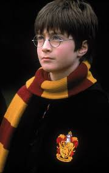

Personajes
Harry Potter

A pesar de haber crecido en un ambiente hostil con sus tíos los Dursley, Harry es descrito como un personaje amable, sensato y cariñoso. Es ferozmente leal a sus amigos y aliados, y posee un gran valor, características que lo llevan a ser seleccionado para la casa Gryffindor en Hogwarts. A lo largo de la historia, demuestra una fuerte moral y una inquebrantable determinación para luchar contra el mal.
Hermione Granger
Desde su primer año en la Escuela Hogwarts de Magia y Hechicería, Hermione destaca por su mente aguda, su sed de conocimiento y su memoria prodigiosa. A menudo es quien encuentra la solución a los problemas utilizando la lógica y la investigación en los libros, superando a sus compañeros y a veces incluso a magos mayores.
Es una bruja nacida de muggles (padres no mágicos, ambos dentistas), un hecho del que se siente orgullosa, aunque le causa problemas con personajes prejuiciosos a lo largo de la serie.
Hermione es esencial para la misión de Harry de destruir los Horrocruxes de Lord Voldemort. Su inteligencia, sus habilidades mágicas avanzadas (como el encantamiento de extensión indetectable que usó en su bolso de cuentas para llevar suministros durante su búsqueda) y su valentía salvan al grupo en numerosas ocasiones.
En resumen, Hermione es el cerebro del grupo y una figura que enseña el valor del conocimiento, la amistad y la lucha por lo que es justo, independientemente del origen de cada uno.
Ronald Bilius Weasley
Ron es el sexto de siete hijos de la familia Weasley, una familia de magos de pura sangre honorable pero con pocos recursos económicos. Crece en "La Madriguera", un hogar acogedor y caótico lleno de amor.
Ron aporta gran parte del humor y la humanidad al trío protagonista. Aunque a veces puede ser inseguro, celoso o inmaduro, especialmente debido a su situación económica o a vivir a la sombra de sus hermanos y de Harry, su lealtad es su rasgo más definitorio. Es un amigo fiable y valiente que siempre termina apoyando a Harry y Hermione.
No posee la inteligencia académica de Hermione ni la fama de Harry, pero tiene una habilidad innata para el ajedrez mágico (crucial en la primera novela), un buen instinto para la estrategia y es un talentoso guardián en el equipo de Quidditch de Gryffindor.
Después de los eventos de la saga, Ron se casa con Hermione Granger y, tras un breve paso como Auror con Harry, se une a su hermano George para dirigir con éxito la tienda de Sortilegios Weasley.